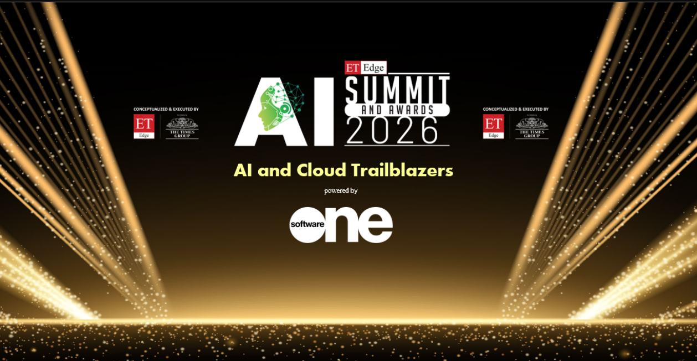
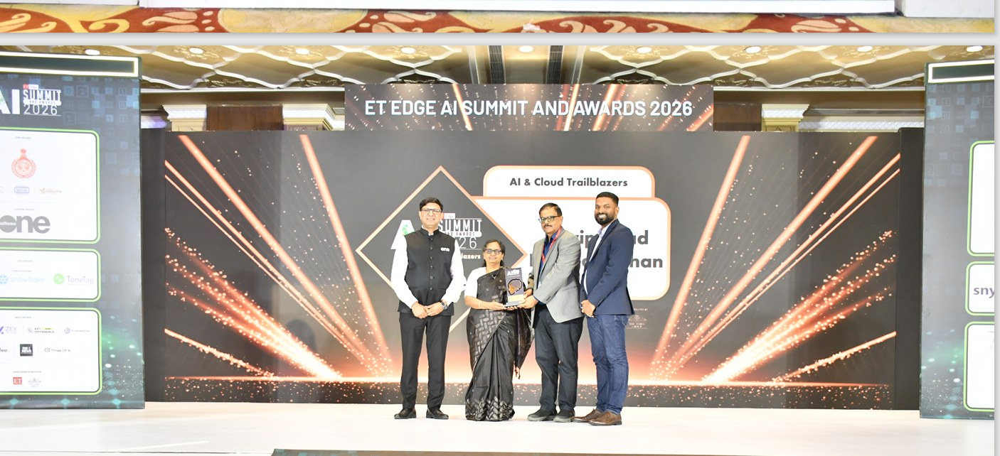

Board & Advisory
Independent perspective on AI strategy, cloud transformation, technology risk and enterprise SaaS decisions.
Explore board contribution ↗AGENTIC AI GOVERNANCE · ENTERPRISE TECHNOLOGY STRATEGY
Helping boards, investors and enterprise leaders evaluate AI investment, technology risk and transformation outcomes — informed by decades of building and leading enterprise technology businesses.
From platforms and cloud to enterprise Agentic AI — a practitioner’s lens on strategy, risk and value creation.
HOW I CONTRIBUTE
Three ways to connect technology decisions with business outcomes and effective oversight.
Independent perspective on AI strategy, cloud transformation, technology risk and enterprise SaaS decisions.
Explore board contribution ↗Practitioner-led insights on Agentic AI, enterprise governance and the questions leadership teams should be asking.
Read insights ↗Connecting platform architecture, operating models, investments and product innovation to measurable commercial outcomes.
View executive profile ↗EXECUTIVE PROFILE
Nearly three decades at the intersection of enterprise technology, transformation and business leadership.
My career has spanned integration platforms, APIs, cloud engineering, intelligent automation, Generative AI and Agentic AI. At Wipro, I led technology practices and businesses with portfolios up to $125M and global organisations of 800+ professionals.
At Comviva, I lead a technology transformation charter across Agentic AI, SaaSification and emerging technologies, including architectural direction for a reusable Agentic Orchestration Platform and cross-product intelligence capabilities.
That experience shapes how I think about board oversight: technology ambition needs to be tested against execution capacity, risk, customer outcomes and capital discipline.
Read my board biography (PDF) ↗Raviprasad · Enterprise Technology & AI Governance
APIs, microservices, enterprise architecture, digital workflow transformation.
Led a $125M cloud and platform portfolio; built capabilities and partnerships.
Immersive technologies, cloud AI transformation, capability building and global delivery.
Agent orchestration, governance foundations, SaaSification and platform direction at Comviva.
RECOGNITION & INDUSTRY ENGAGEMENT
AI & Cloud Trailblazers recognition — event cover and the award presentation photograph supplied for this website.


Recognition at the ET Edge AI Summit & Awards 2026.
View full ceremony photo booklet (PDF) ↗BOARD & ADVISORY PROFILE
For nomination committees, boards, investors and founders seeking an experienced technology executive perspective on strategy, risk, capital allocation and enterprise AI governance.
Challenge AI investment cases, autonomy boundaries, model risk, guardrails and accountability for outcomes.
Review transformation economics, vendor concentration, delivery risk and operating-model readiness.
Assess productisation, platform investment, SaaSification and monetisation trade-offs.
Separate activity reporting from realised value, risk reduction and business change.
Stress-test AI product roadmaps against enterprise needs, defensibility, scale and commercial viability.
Technology: architecture, AI governance, resilience, platform strategy · Audit / Risk: technology controls, cybersecurity and AI risk · Strategy: capital allocation, SaaS and transformation ROI · Innovation: emerging technology and product direction
Open to consideration for independent director appointments, advisory boards and strategic technology advisory mandates. No current independent directorship is represented here; appointment eligibility, independence, conflicts and applicable statutory requirements must be assessed for each opportunity.
Discuss a board or advisory opportunity ↗BOARD BIOGRAPHY · PDF
A concise, two-page biography covering technology investment oversight, Agentic AI governance, commercial leadership and relevant committee contributions.
INSIGHTS HUB
A featured industry thought-leadership paper, alongside four in-depth articles on AI governance, cloud transformation and board oversight.
FEATURED PUBLICATION · CO-AUTHORED INDUSTRY PAPER
The Next Monetization Frontier for Telecom Companies
A published Comviva and Third Eye Advisory paper examining how telecom companies can move beyond fragmented AI features toward context-aware intelligence platforms, agentic orchestration and outcome-led monetization.
Read published paper (PDF) ↗Original publisher-branded paper · 7 pages · © 2026 Comviva Technologies Ltd.
Understanding autonomous decisions, oversight and accountability.
Read full article ↗A practical framework for evaluating AI strategy and measurable outcomes.
Read full article ↗Seven areas boards should examine in major cloud investments.
Read full article ↗Rethinking technology expertise in board skills matrices.
Read full article ↗SPEAKING & BOARD EDUCATION
Board education · Keynote · Panel
Technology and audit committees · Workshop
Technology boards · Investors · Executive workshop
Boards · Transformation leaders · Keynote
Board briefings · Industry forums · Panel
CONNECT
For board and independent director consideration, strategic advisory, speaking and thought-leadership collaborations, please reach out with a brief description of the opportunity.